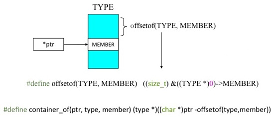
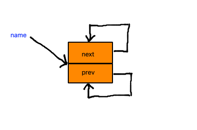
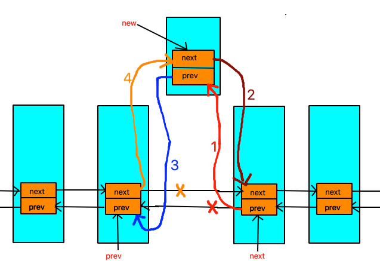
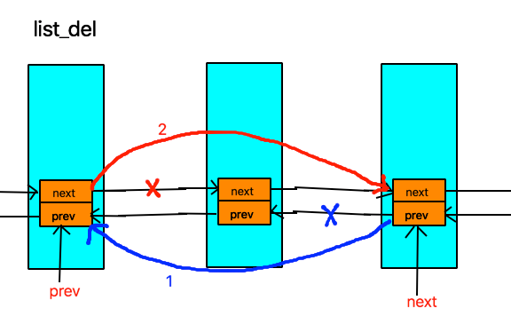
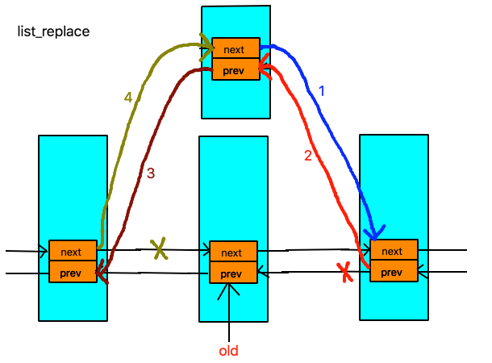
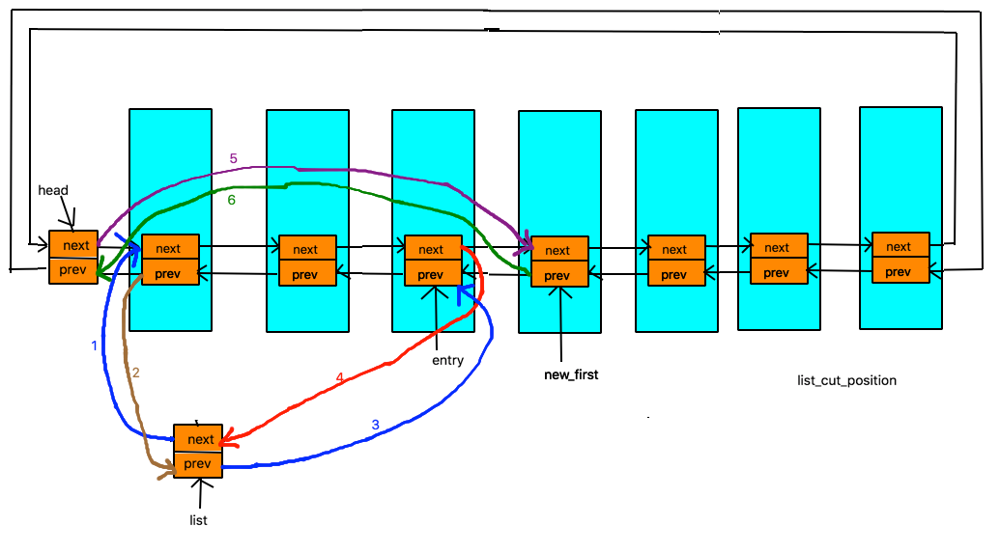
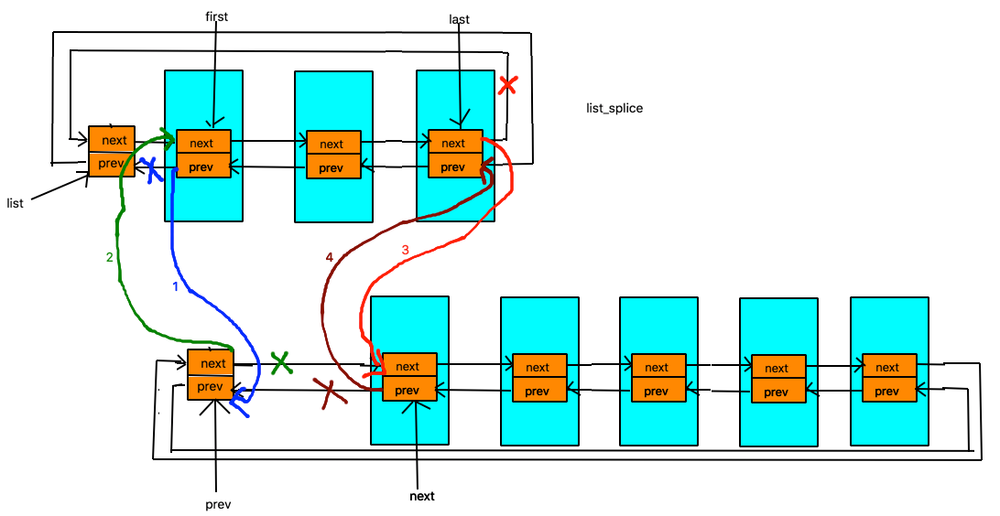

内核基础设施——list_head结构解析
Contents
list_head用法经常在Linux kernel里面经常看见，该文对内核中的list_head进行了总结分析。
注意：本文的中的代码来自于内核版本
v4.16。
数据结构
在Linux内核中，list_head用来创建双向循环链表，kernel中对list_head的定义如下：
struct list_head {
struct list_head *next, *prev;
};
#define LIST_HEAD_INIT(name) { &(name), &(name) }
#define LIST_HEAD(name) \
struct list_head name = LIST_HEAD_INIT(name)
需要注意的一点是，头结点head是不使用的，这点需要注意。
使用list_head组织的链表的结构如下图所示：

list_head详细分析
list_head这个结构看起来怪怪的，它竟没有数据域！所以看到这个结构的人第一反应就是我们怎么访问数据？
其实list_head不是拿来单独用的，它一般被嵌到其它结构中，如：
struct file_node{
char c;
struct list_head node;
};
此时list_head就作为它的父结构中的一个成员了，当我们知道list_head的地址（指针）时，我们可以通过include/linux/list.h提供的宏 list_entry 来获得它的父结构的地址。
下面我们来看看list_entry的实现:
/**
* list_entry - get the struct for this entry
* @ptr: the &struct list_head pointer.
* @type: the type of the struct this is embedded in.
* @member: the name of the list_head within the struct.
*/
#define list_entry(ptr, type, member) \
container_of(ptr, type, member)
#define offsetof(TYPE, MEMBER) ((size_t)&((TYPE *)0)->MEMBER)
/**
* container_of - cast a member of a structure out to the containing structure
* @ptr: the pointer to the member.
* @type: the type of the container struct this is embedded in.
* @member: the name of the member within the struct.
*
*/
#define container_of(ptr, type, member) ({ \
const typeof( ((type *)0)->member ) *__mptr = (ptr); \
(type *)( (char *)__mptr - offsetof(type,member) );})
这里涉及到三个宏，还是有点复杂的，我们一个一个来看：
#define offsetof(TYPE,MEMBER) ( (size_t)& ((TYPE *)0）-> MEMBER )，我们知道 0 地址内容是不能访问的，但 0地址的地址我们还是可以访问的， 这里用到一个取址运算符,(TYPE *)0它表示将 0地址强制转换为TYPE类型，((TYPE *)0）-> MEMBER 也就是从0址址找到TYPE 的成员MEMBER 。
我们结合上面的结构来看,
struct file_node{
char c;
struct list_head node;
};
将实参代入 offset( struct file_node, node )；最终将变成这样：
( (size_t) & ((struct file_node*)0）-> node )
这样看的还是不很清楚，我们再变变：
struct file_node *p = NULL;
&p->node;
这样应该比较清楚了，即求p的成员 node的地址，只不过p 为0地址，从0地址开始算成员node的地址，也就是 成员node 在结构体 struct file_node中的偏移量。offset宏就是算MEMBER在TYPE中的偏移量的。
我们再看第二个宏
#define container_of(ptr, type, member) ({ \
const typeof( ((type *)0)->member ) *__mptr = (ptr); \
(type *)( (char *)__mptr - offsetof(type,member) );})
这个宏是由两个语句组成，最后container_of返回的结果就是第二个表达式的值。这里__mptr为中间变量，这就是list_head指针类型，它被初始化为ptr的值，而ptr就是当前所求的结构体中list_head节点的地址。为什么要用中间变量，这是考虑到安全性因素，如果传进来一个ptr++，所有ptr++放在一个表达式中会有副作用，像 (p++)+(p++)之类。
(char*)__mptr 之所以要强制类型转化为char是因为地址是以字节为单位的，而char的长度就是一个字节。
container_of的值是两个地址相减，刚说了__mptr是结构体中list_head节点的地址，offset宏求的是list_head节点MEMBER在结构体TYPE中的偏移量，那么__mptr减去它所在结构体中的偏移量，就是结构体的地址。
所以list_entry(ptr,type,member)宏的功能就是，由结构体成员地址求结构体地址。其中ptr 是所求结构体中list_head成员指针，type是所求结构体类型，member是结构体list_head成员名。通过下图来总结一下：

相关API
| API | 说明 |
|---|---|
| LIST_HEAD | 静态初始化list_head |
| INIT_LIST_HEAD | 动态初始化list_head |
| list_add | 在链表头部添加一个新节点 |
| list_add_tail | 在链表尾部添加一个新节点 |
| list_del | 删除一个节点 |
| list_del_init | 删除一个节点 |
| list_replace | 替换一个节点 |
| list_replace_init | 替换一个节点 |
| list_move | 将一个节点从一个链表中删除，并添加到另一个链表的头部 |
| list_move_tail | 将一个节点从一个链表中删除，并添加到另一个链表的尾部 |
| list_is_last | 判断节点是否为链表的最后一个节点 |
| list_empty | 判断链表是否为空 |
| list_empty_careful | 判断链表是否为空 |
| list_rotate_left | 将链表的第一个节点移动到末尾 |
| list_is_singular | 判断链表是否只有个节点 |
| list_cut_position | 将链表前面知道entry的部分删除，并添加到新的链表list中 |
| list_splice | 将两个链表链接在一起 |
| list_splice_tail | 将两个链表链接在一起 |
| list_splice_init | 将两个链表链接在一起 |
| list_splice_tail_init | 将两个链表链接在一起 |
| list_entry | 根据list_head找到其被嵌入的结构体 |
| list_first_entry | 获取链表的第一个entry |
| list_last_entry | 获取链表的最后一个entry |
| list_first_entry_or_null | 获取链表的第一个entry |
| list_next_entry | 获取链表指定entry的下一个entry |
| list_prev_entry | 获取链表指定entry的前一个entry |
| list_for_each | 遍历链表，遍历元素为list_head |
| list_for_each_safe | 遍历链表，遍历元素为list_head |
| list_for_each_prev | 反向遍历链表，遍历元素为list_head |
| list_for_each_prev_safe | 反向遍历链表，遍历元素为list_head |
| list_for_each_entry | 遍历链表，遍历元素为外层结构体 |
| list_for_each_entry_reverse | 反向遍历链表，遍历元素为外层结构体 |
| list_prepare_entry | 为list_for_each_entry_continue准备一个entry |
| list_for_each_entry_continue | 从当前节点的下一个节点进行遍历 |
| list_for_each_entry_continue_reverse | 从当前节点的下一个节点进行反向遍历 |
| list_for_each_entry_from | 从当前节点进行遍历 |
| list_for_each_entry_from_reverse | 从当前节点进行反向遍历 |
| list_for_each_entry_safe | 遍历链表，遍历元素为外层结构体 |
| list_for_each_entry_safe_reverse | 反向遍历链表，遍历元素为外层结构体 |
| list_for_each_entry_safe_continue | 从当前节点的下一个节点进行遍历 |
| list_for_each_entry_safe_from | 从当前节点进行遍历 |
| list_safe_reset_next | 用于在list_for_each_entry_safe中，跳过某个entry |
对上述API中的部分，我们进行了图示：
LIST_HEAD/INIT_LIST_HEAD
LIST_HEAD/INIT_LIST_HEAD两个宏用于初始化list_head节点。
#define LIST_HEAD_INIT(name) { &(name), &(name) }
#define LIST_HEAD(name) \
struct list_head name = LIST_HEAD_INIT(name)
static inline void INIT_LIST_HEAD(struct list_head *list)
{
WRITE_ONCE(list->next, list);
list->prev = list;
}
图示如下：

__list_add
include/linux/list.h(line 50)/*
* Insert a new entry between two known consecutive entries.
*
* This is only for internal list manipulation where we know
* the prev/next entries already!
*/
static inline void __list_add(struct list_head *new,
struct list_head *prev,
struct list_head *next)
{
if (!__list_add_valid(new, prev, next))
return;
next->prev = new; //1
new->next = next; //2
new->prev = prev; // 3
WRITE_ONCE(prev->next, new); //4
}
图示如下：

__list_del
include/linux/list.h(line 96)/*
* Delete a list entry by making the prev/next entries
* point to each other.
*
* This is only for internal list manipulation where we know
* the prev/next entries already!
*/
static inline void __list_del(struct list_head * prev, struct list_head * next)
{
next->prev = prev; // 1
WRITE_ONCE(prev->next, next); //2
}
图示如下：

list_replace
include/linux/list.h(line 130)/**
* list_replace - replace old entry by new one
* @old : the element to be replaced
* @new : the new element to insert
*
* If @old was empty, it will be overwritten.
*/
static inline void list_replace(struct list_head *old,
struct list_head *new)
{
new->next = old->next; // 1
new->next->prev = new; // 2
new->prev = old->prev; // 3
new->prev->next = new; // 4
}
图示如下：

__list_cut_position
include/linux/list.h(line 248)static inline void __list_cut_position(struct list_head *list,
struct list_head *head, struct list_head *entry)
{
struct list_head *new_first = entry->next;
list->next = head->next; //1
list->next->prev = list; //2
list->prev = entry; // 3
entry->next = list; // 4
head->next = new_first; //5
new_first->prev = head; // 6
}
图示如下：

__list_splice
include/linux/list.h(line 288)static inline void __list_splice(const struct list_head *list,
struct list_head *prev,
struct list_head *next)
{
struct list_head *first = list->next;
struct list_head *last = list->prev;
first->prev = prev; // 1
prev->next = first; // 2
last->next = next; // 3
next->prev = last; // 4
}
图示如下：
